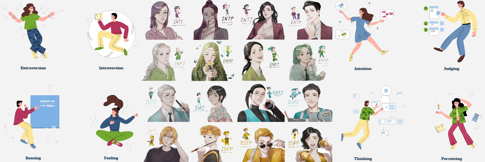
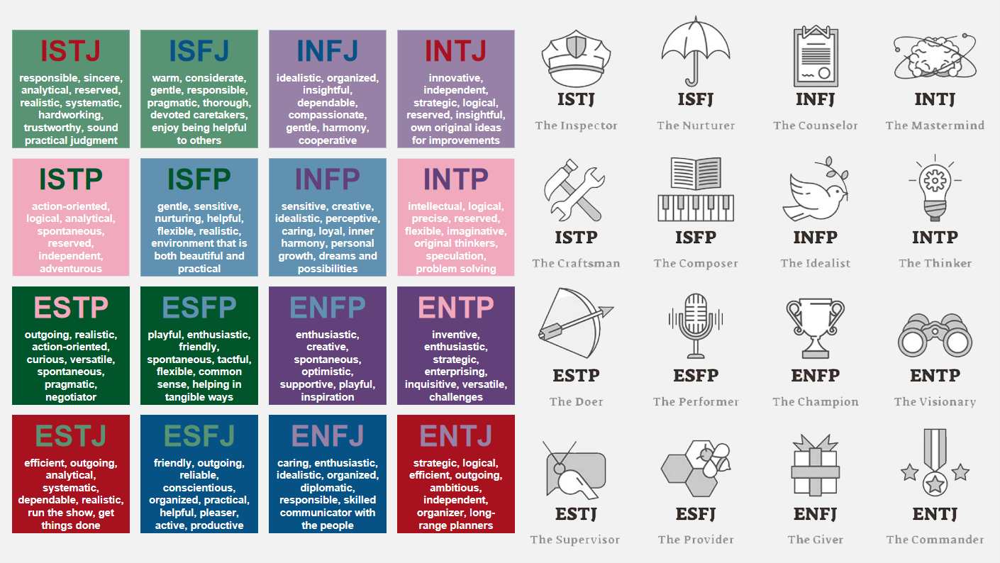
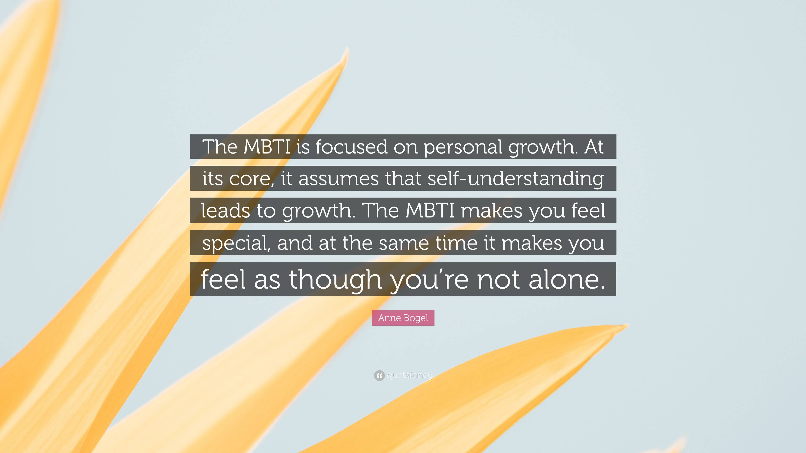
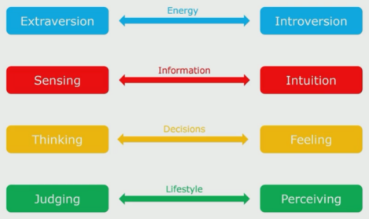

|  |
|---|
|  |  |
|---|
| SECTION 1: UNDERSTANDING PERSONALITY TYPES AT WORK - COURSE INTRODUCTION |
|---|
| Introduction to Understanding Personality Types at Work |
| Knowing more about your unique personality can help you understand yourself better and make changes in your life that will make you more confident and successful.
Personality Types are really useful to help people understand themselves at a deeper level, to help them with their relationships, and to help with career decisions. Gives insights into communication skills, decision making, stress management, conflict resolution, and a whole host of other applications, so they really underpin the development of emotional intelligence. Carl Jung investigated Personality Types about 200 years ago, although his work was rather academic. A mother-daughter team Isabel Briggs Myers and Katharine Cook Briggs worked with his research, further refined it, and made it a whole lot more accessible for everyone. Personality Type assessment is based on their work and is now used throughout the world in many corporate organizations to help with leadership development and many of the other aspects. Myers-Brigss Type Indicator (MBTI) - we explore where people get their energy from, how people take in information, how they use this information to make decisions, and then how people work with this to structure and lead their lives 4 Preferences - combination of these makes up your personality type (each type has its own strengths and limitations)  Understanding how the preferences are expressed will give you insights into how your own strengths and limitations, and those of other people work. This will help you to understand how to engage with people better. |